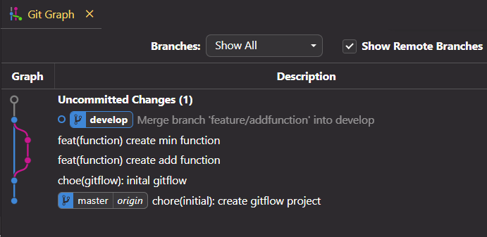
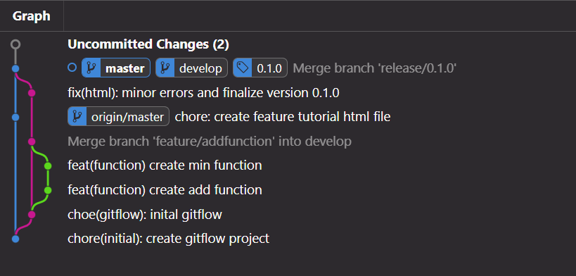

Git Flow Tutorial
Feature Branch
1) git init => initialize repository =>
created master branch
2) git flow init => initialize Git Flow =>
created develop branch
3) git flow feature start namefeature =>
temporary branch namefeature created
4) git add .
5) git commit
6) repeat 3.1:

7) git flow feature finish namefeature

IMPORTANT!: using (start - finish) commands requires a minimum of two
commits to see the history of the temporary branch (Git Flow documentation).
*********************************
Release Branch
1) git flow release start 0.1.0 =>
short branch release/0.1.0 created
2) Make some change to commit
3) git add .
4) git commit
5) git flow release finish 0.1.0 =>
short branch release/0.1.0 merged and deleted
